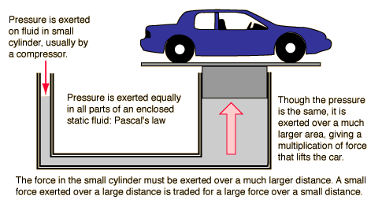

Automobile Hydraulic Lift
A hydraulic lift for automobiles is an example of a force multiplied by hydraulic press, based on Pascal's principle. The fluid in the small cylinder must be moved much further than the distance the car is lifted.

For example, if the lift cylinder were 25 cm in diameter and the small cylinder were 1.25 cm in diameter, then the ratio of the areas is 400, so the hydraulic press arrangement gives a multiplication of 400 times the force. To lift a 6000 newton car, you would have to exert only 6000 N/400 = 15 N on the fluid in the small cylinder to lift the car. However, to lift the car 10 cm, you would have to move the oil 400 x 10cm = 40 meters. This is practical by pumping oil into this small cylinder with a small compressor.
|
Index
Pascal's principle concepts |